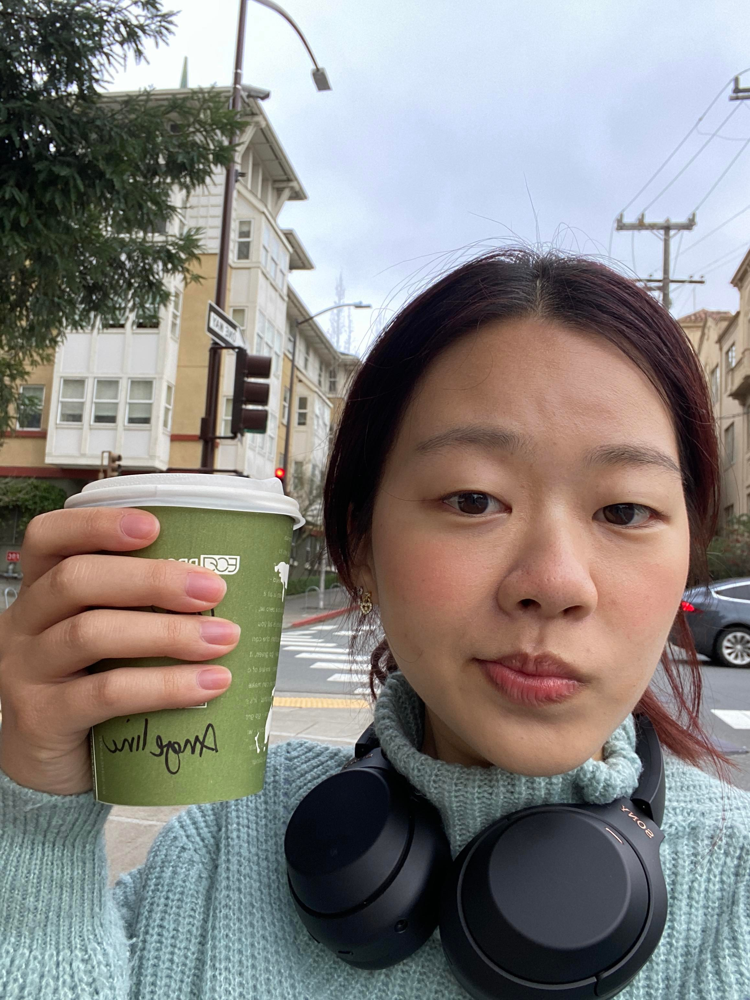

Angeline Liu
Business Administration, 2nd Year
Hi, my name is Angeline, and I'm a sophomore. I work as a barista but I don't drink coffee.
I have red hair. I have 3 piercings on each ear. I have a dog named Minnie. I enjoy exploring Bay Area restaurants.
I love all beverages. I also like thrifting. Please give me TV show recs!
My favorite places to eat in Berkeley:
- Little Plearn
- Toss Noodle Bar
- SoDoI Coffee House

Part 2: Reading Response
- I learned that creating good design choices come from analyzing the app from a developer's perspective.
You need to break down each component and think about what needs each feature serves for users.
- My favorite part of the article was when they mentioned that the search bar has a suggestion - "Try London."
It's something that a lot of websites use, but I never really noticed it or thought about why they have suggestions
already put in front of you.
- "You develop your design eye by thinking as if you were the designer of a product."
- 8